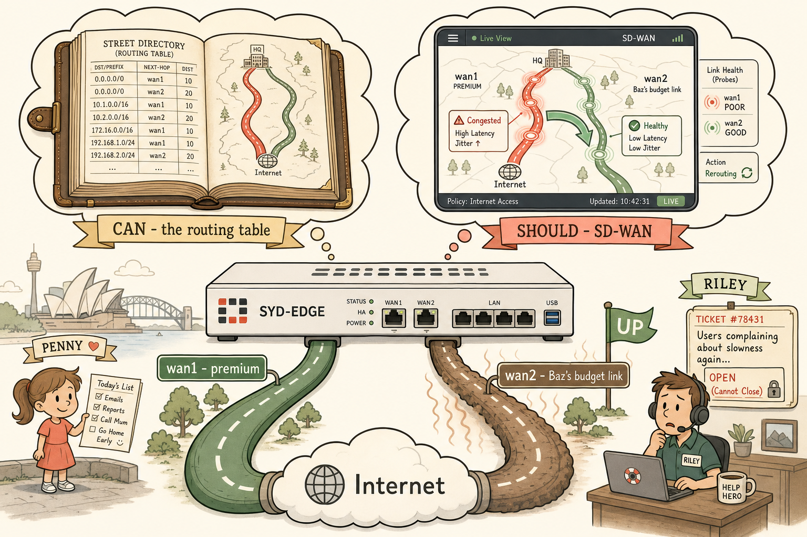
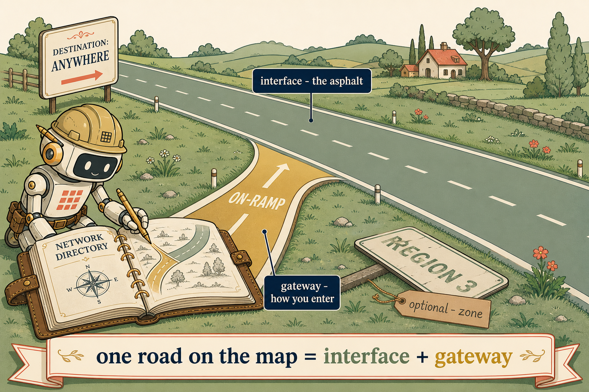
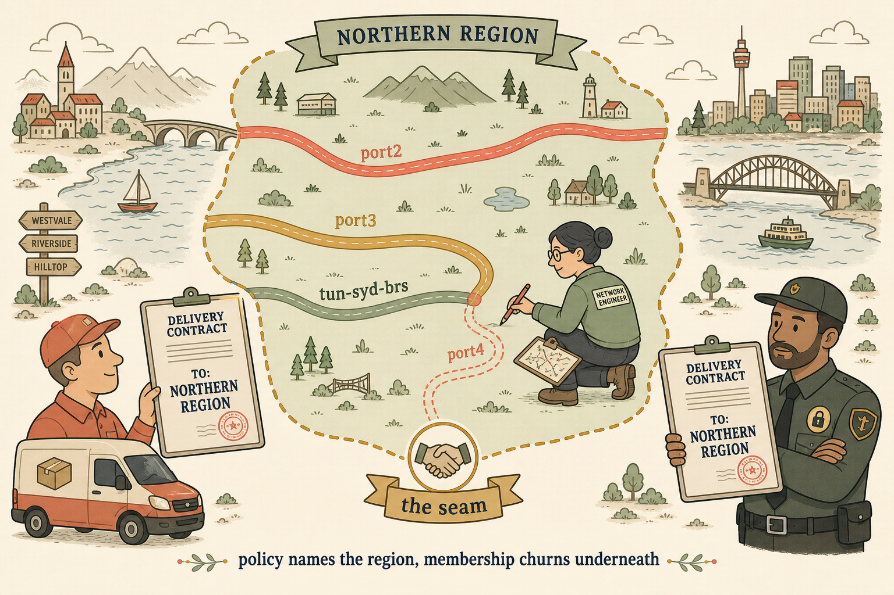
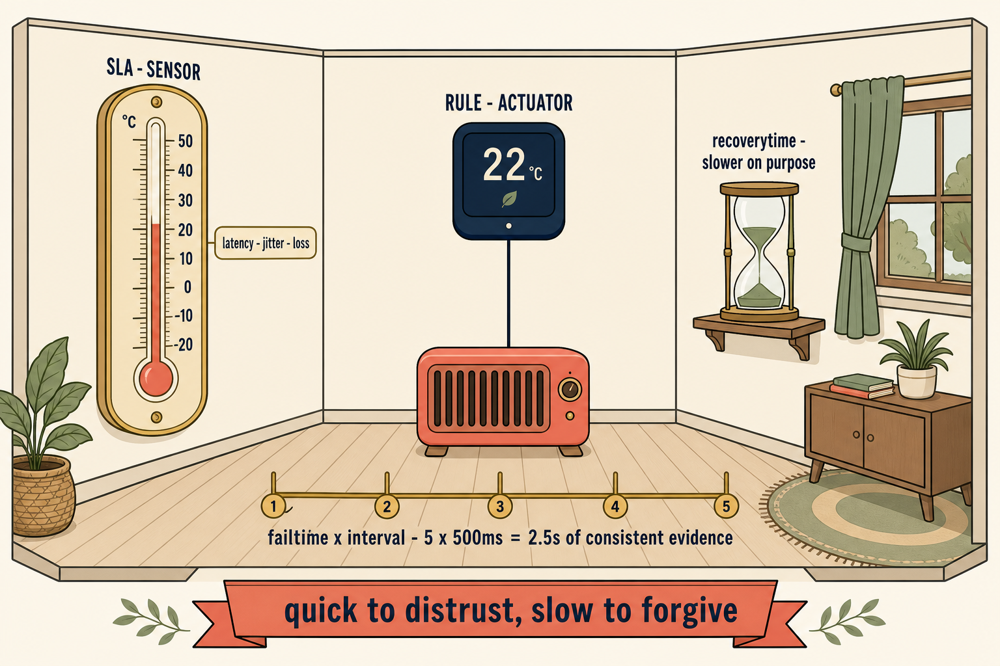
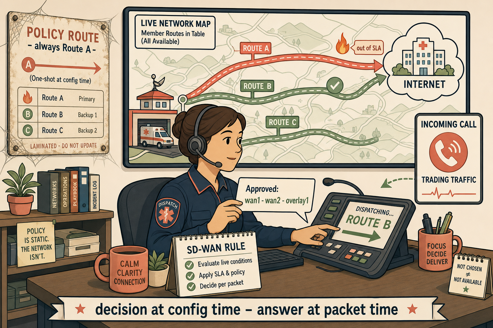
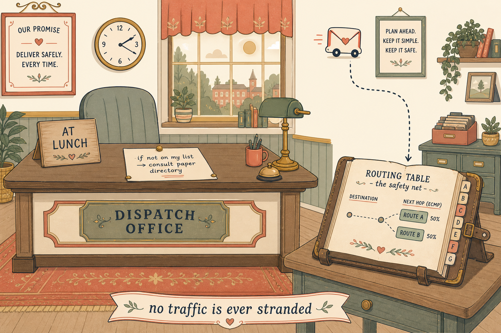
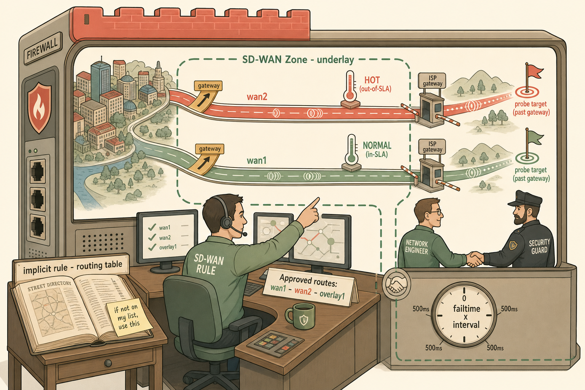
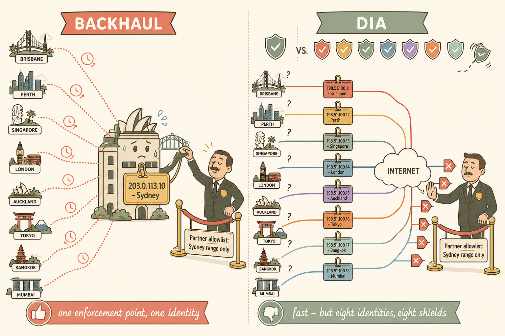

Routing answers "can this packet get there?" SD-WAN answers "which road should it take right now?" Everything else is detail.
Baz's link was up. Penny's trades were lagging. Both were true at the same time.
That contradiction is the entire reason SD-WAN exists. This pre-reading builds the map before Sessions 63–75 fill in the terrain: rules, session behaviour, FortiManager templates, overlays, and ADVPN all hang off the frame you build here.
💭THINK FIRST · OVERVIEW
In Session 62 you derived — cold, from first principles — why the routing table can't see quality. Before reading on, retrieve it. This distinction is the load-bearing wall of everything in the SD-WAN guide.
A route entry contains destination, next hop, distance, metric, interface. Which of Penny's complaints ("trades lag at 09:40") can a routing table detect? Why not?
Baz's link browned out but stayed UP. What exactly did LoFinance think Baz promised, versus what he actually promised?
Q1 — MODEL ANSWER
None of them. Every field in a route entry describes reachability and preference at config/convergence time — nothing measures latency, jitter, or loss as they exist right now. A route to a 300ms, 8%-loss link looks identical to a route to a perfect link. The routing table is structurally blind to quality; that blindness is not a bug to fix but a boundary to build on top of.
Q2 — MODEL ANSWER
Baz promised up — a link that carries packets. LoFinance assumed he promised good — a link that carries packets quickly and consistently. "Up" is binary and easy to monitor; "good" is continuous, per-application, and changes minute to minute. SD-WAN is the machinery that measures "good" and acts on it, because no carrier SLA and no routing protocol will do it for you.
SECTION 01 · HIGH-LEVEL OVERVIEW
What SD-WAN Actually Is
Strip away the marketing and SD-WAN on FortiGate is one idea: a decision layer that sits in front of the routing table and chooses between multiple usable paths based on live measured quality and application identity — then keeps re-choosing as conditions change.
Traditional routing gives you one winner per destination. If you have two internet links, the routing table crowns one (by distance, then priority, then metric) and the other sits idle or takes only what ECMP happens to spray at it. When the winner degrades without going down — Baz's brownout — nothing reacts, because nothing is watching. The link is up. The route stays. The trades lag. Riley gets a ticket she cannot close.
SD-WAN adds three capabilities the routing table structurally cannot have:
Measurement — continuous probes report latency, jitter and packet loss per link, per target (Performance SLAs).
Application awareness — traffic is matched by who it is (source, destination, user, application, protocol), not just where it's going.
Continuous steering — the forwarding decision is re-evaluated as measurements change, per SD-WAN rule strategy, without waiting for a routing protocol to converge.
Where it sits in the Life of a Packet: SD-WAN selection happens in the kernel alongside routing and RPF check — before policy lookup. It is not a security feature bolted on afterwards; it is a forwarding decision made where forwarding decisions belong. Firewall policies still apply — they just reference SD-WAN zones instead of individual interfaces.
🧭 VISUAL ANALOGY — THE OVERALL SYSTEM
A paper street directory versus a live navigation app.
The routing table is the paper directory: complete, authoritative, tells you every road that exists and which is officially shortest. It was printed at config time. It has no idea there's a crash on the M1 right now.
SD-WAN is the navigation app: it reads the same directory, but it also has live traffic data (Performance SLAs), it knows whether you're driving a delivery van or an ambulance (application awareness), and it reroutes you mid-journey when the road degrades (continuous steering).
Crucially — the app never tears pages out of the directory. The road still exists, the route stays in the table. The app just stops choosing it.
🧠
MENTAL NOTE — THE ONE-LINER
Routing answers CAN. SD-WAN answers SHOULD — and keeps re-answering. Out-of-SLA never removes the route; it removes the member's eligibility.

images/prereading-two-brains.png · 16:9
The two brains: the static directory and the live navigator, side by side above SYD-EDGE.
Flat minimalistic but highly detailed vector illustration, cream off-white background, coral accents, muted gold highlights, sage greens, soft brown outlines, clean bold line work, no gradients, no photorealism, storybook-professional. Composition: a single FortiGate-style firewall appliance labelled "SYD-EDGE" at centre-bottom, with two thought-bubble "brains" floating above it. LEFT brain: an old leather-bound paper street directory, open, showing neat printed route entries (tiny rows suggesting "dst / next-hop / distance"), rendered in muted gold and brown — calm, dusty, timeless; small caption ribbon "CAN — the routing table". RIGHT brain: a glowing modern navigation-app screen showing the same two roads but with one road pulsing coral-red (congested) and a live rerouting arrow diverting onto the sage-green healthy road; small probe pulses (tiny radar rings) travelling along both roads; caption ribbon "SHOULD — SD-WAN". From the firewall, two physical WAN roads run to a shared internet cloud: road one labelled "wan1 · premium", road two labelled "wan2 · Baz's budget link" with a faint heat-shimmer suggesting brownout, but a green "UP" flag still planted on it — the visual contradiction of up-but-bad. In the far background, a tiny Penny figure holds a handwritten list, and a tiny Riley figure wears a help-desk headset beside an unclosable ticket. Do NOT include: dense CLI text, vendor logos, 3D rendering, photoreal people. Learning purpose: anchor the CAN/SHOULD split and the up-but-degraded contradiction in one image.
💭THINK FIRST · COMPONENTS
One of these questions targets your Q2 miss from Session 62. The other targets the timer arithmetic. Answer both before scrolling — this is deliberate retrieval, not decoration.
An SD-WAN member is built from exactly two essential ingredients. One is the interface. What is the other — and what does FortiGate quietly build for you the moment you supply it?
A Performance SLA has interval 500 (ms) and failtime 5. How many seconds pass between the link degrading and FortiGate declaring it out-of-SLA?
Q1 — MODEL ANSWER
The gateway. Interface + gateway is the essential pair; zone, cost and priority are optional extras. The gateway matters because FortiGate uses it to auto-generate the member's static route — that route is how the member's path exists in the routing table at all. No gateway on a routed interface, no usable path. Zone is grouping; gateway is plumbing.
Q2 — MODEL ANSWER
failtime × interval = 5 × 500ms = 2.5 seconds. Failtime counts consecutive failed probes; interval is the spacing between probes. Always multiply. And remember the asymmetry: recoverytime is typically longer — quick to distrust, slow to forgive.
SECTION 02 · THE COMPONENTS
Five Parts, One Machine
Every SD-WAN feature you'll meet between now and Session 75 — rules, overlays, FortiManager templates, ADVPN steering — is assembled from these five parts. Learn each part's job title, not just its config.
1MemberTHE ROADYour flagged weak spot — S62
A member is one usable path: an interface + gateway pair (zone, cost, priority optional). It can be a physical WAN port, a VLAN, an LTE modem, or — from Session 68 onwards — an IPsec overlay tunnel. The member is the unit of selection: rules choose members, SLAs measure members, sessions ride members.
The part that didn't stick first time: the gateway field isn't paperwork. It's what lets FortiGate auto-generate the member's static route, which is the member's entire claim to existence in the routing table.
🛣️ VISUAL ANALOGY
A road on the map needs two things: the road itself, and the on-ramp.
The interface is the road — the physical asphalt.
The gateway is the on-ramp — without knowing where you join the road, owning the asphalt is useless. Supply the on-ramp and FortiGate draws the road onto the directory (the auto static route) for you.
The zone label on the road sign? Optional. Roads work without belonging to a named region. On-ramps are not optional.

images/prereading-member-road.png · 3:2
A road is just asphalt until you supply the on-ramp — then FortiGate draws it onto the directory.
Flat minimalistic but highly detailed vector illustration, cream #faf5e9 background, coral accents, muted gold highlights, sage green surfaces, soft brown outlines, deep navy for text; clean bold line work, no gradients, no photorealism, storybook-professional. Composition: a single stretch of sage-green rural road running left to right across the frame, viewed at a slight three-quarter angle. Two elements are prominently labelled with small navy tags: the road surface itself labelled "interface — the asphalt", and a muted-gold ON-RAMP visibly joining the road from the lower-left, labelled "gateway — how you enter". Beside the on-ramp, a small friendly architect-robot character (representing FortiGate) is bent over an open leather-bound directory sketching the road onto its page with a gold pen — the pen only touches the page because the on-ramp is present. On the opposite verge, a faded "REGION 3" road sign lies flat on the grass with a small brown paper tag reading "optional — zone". Bottom caption ribbon: "one road on the map = interface + gateway". Do NOT include: CLI text, vendor logos, dashboards, photoreal people, gradients or 3D rendering. Learning purpose: pair interface and gateway visually so the auto-generated static route is remembered as a consequence of the on-ramp existing.
2ZoneTHE REGION · THE SEAM
A zone groups members. Two jobs, and the second is the one juniors miss: (a) SD-WAN rules and firewall policies can target the zone instead of individual members; (b) it is the seam between the network team and the security team. Policies reference the zone once; membership churns underneath forever without a single policy edit. Add port3 to the zone — every policy already covers it.
🗂️ VISUAL ANALOGY
A named delivery region, not a street address.
Security policy says "anything going to the Northern Region gets inspected like this." It never names streets.
The council (network team) can add roads, close roads, rename roads inside the region all year. The delivery contract (firewall policy) never gets re-signed.
This is why zones scale to eight branches and Sydney doesn't drown in policy edits.

images/prereading-zone-region.png · 16:9
A named delivery region — the seam between the network team and the security team.
Flat minimalistic detailed vector illustration, cream #faf5e9 background, coral / muted gold / sage green palette, soft brown outlines, deep navy text; no gradients, no photorealism, storybook-professional. Wide birds-eye illustrated map. CENTRE: a soft sage-green region outlined in a dashed muted-gold border labelled "NORTHERN REGION" in a small ribbon banner. INSIDE the region, three named roads drawn as coloured ribbons across the terrain — "port2", "port3", "tun-syd-brs" (in coral, gold, sage). OUTSIDE the region, a small courier van in the bottom-left holds up a laminated delivery contract stamped "TO: NORTHERN REGION"; the contract text visibly names only the region, no street. A council-worker character (network engineer, calm, holding a clipboard) inside the region is drawing a new fourth road labelled "port4" onto the map with a pencil; a security-guard character (calm, arms folded, small padlock pin — Cipher-style) stands at the region border reading the same delivery contract without editing it. Between them, at the boundary, a small handshake icon and a caption ribbon "the seam". Small bottom caption: "policy names the region, membership churns underneath". Do NOT include: CLI text, screenshots, vendor logos, gradients or 3D rendering. Learning purpose: encode zone as an organisational boundary and as the interface between the network team and the security team, not just a config grouping.
3Performance SLA (Health Check)THE SENSOR
Continuous probes sent through each member to a target beyond the ISP gateway (probing the gateway itself proves nothing — the brownout lives past it). Probes measure latency, jitter, packet loss; protocol is configurable (ping default; tcp-echo, udp-echo, http, https, dns, twamp, ftp) — and you already reasoned out why: probe with the protocol your traffic actually uses, because carriers queue ICMP differently and ICMP can lie in either direction.
Sensor, not actuator. The SLA measures and declares in/out-of-SLA. It acts on nothing. Rules act. Confusing these two was your one wobble in S62 — the thermometer fixed it, so keep the thermometer.
Timers:failtime × interval = time to declare out-of-SLA. recoverytime is deliberately longer. Thresholds use AND logic — every listed link-cost-factor must pass; one breach = out.
🌡️ VISUAL ANALOGY
The thermometer on the wall.
The SLA is the thermometer — it reads the room constantly and honestly. It never touches the heater.
The rule is the thermostat — it reads the thermometer and decides to act.
Failtime × interval is how long the room must stay cold before the thermometer's reading is trusted: five bad readings, half a second apart — 2.5 seconds of consistent evidence, not one noisy sample.
Recovery is slower on purpose: one warm reading after a cold spell doesn't mean the heating is fixed. Quick to distrust, slow to forgive.

images/prereading-sla-thermometer.png · 3:2
The thermometer on the wall — measures the room honestly, never touches the heater.
Flat minimalistic detailed vector illustration, cream #faf5e9 background, coral / muted gold / sage / soft brown palette, deep navy for text, clean bold outlines, no gradients, no photorealism. Cutaway room scene, cosy and quiet. On the LEFT wall, a large analog thermometer rendered in muted gold and brown labelled "SLA — SENSOR" reading the room temperature with a visible mercury bulb; a small caption tag beside it reads "latency · jitter · loss". In the CENTRE of the room, a small navy-blue wall thermostat labelled "RULE — ACTUATOR" is visibly wired down to a coral heater on the floor — a single clean line from thermostat to heater. IMPORTANT: no line, no wire, no lever connects the thermometer to the heater; the thermometer only reads, never touches. Between them, a horizontal track along the floor with five muted-gold tick marks labelled "failtime × interval — 5 × 500ms = 2.5s of consistent evidence". In the RIGHT background, a small hourglass icon labelled "recoverytime — slower on purpose". Small bottom caption ribbon: "quick to distrust, slow to forgive". Do NOT include: CLI text, dashboards, gauges, vendor logos, photorealism. Learning purpose: cement sensor vs actuator — measurement never acts; rules act on measurements — and the deliberate asymmetry of the timers.
4SD-WAN RuleTHE DECISION-MAKER
Rules match traffic (source, destination, user, application, protocol/port — evaluated before the routing table, top-down, first match wins) and select an egress member from a candidate list using a strategy: manual order, best quality, lowest cost within SLA, or load-balance. Members that are out-of-SLA lose eligibility within the rule — the route beneath them never moves.
The comparison you inherited and we corrected: a policy route shares the matching half. But — "a policy route picks an interface. An SD-WAN rule picks from a GROUP of interfaces, and keeps picking." Decision made at config time; answer made at packet time.
Three member states, always keep them separate: UP (link alive, route present) → ELIGIBLE (in this rule's list AND in-SLA) → PREFERRED (wins under this rule's strategy right now).
🚑 VISUAL ANALOGY
The ambulance dispatcher with a live traffic screen.
A policy route is a laminated instruction card: "ambulances always take Route A." Written once. Followed forever, even when Route A is on fire.
An SD-WAN rule is the dispatcher: she knows this call is an ambulance (application match), she has a shortlist of approved routes (member list), the traffic screen (SLA feed) tells her Route A just went red, and she assigns Route B — for this dispatch, and re-assesses on the next.
Route A is still on the city map. She just isn't sending anyone down it today.

images/prereading-rule-dispatcher.png · 16:9
The dispatcher with a live traffic screen — decides at packet time, not config time.
Flat minimalistic detailed vector illustration, cream #faf5e9 background, coral / muted gold / sage / soft brown palette, deep navy for text, clean bold outlines, no gradients, no photorealism, storybook-professional. Wide scene of a busy ambulance dispatch office viewed from a low three-quarter angle. CENTRE: a calm dispatcher character (representing the SD-WAN Rule) at a desk with a headset, holding a shortlist card printed "Approved: wan1 · wan2 · overlay1". BEHIND her, a large live wall-map showing three roads leading to a distant hospital-shaped internet cloud — Route A glowing coral-red with a small flame icon and a small tag "out of SLA", Route B sage-green with a small tick, Route C sage-green. On her desk, a small speech-callout reads "for THIS call" and she is visibly dispatching "Route B" to an incoming call icon labelled "trading traffic". LEFT WALL: pinned dusty laminated instruction card labelled "POLICY ROUTE — always Route A", deliberately faded and cobwebbed, showing it as stale. Note visibly: Route A is still drawn on the wall-map — she is simply not choosing it. Small bottom caption ribbon: "decision at config time · answer at packet time". Do NOT include: CLI text, screenshots, vendor logos, gradients or 3D rendering. Learning purpose: contrast the one-shot laminated policy route with the ongoing SD-WAN rule that re-decides per packet, and reinforce that member routes remain in the table even when not chosen.
5Implicit RuleTHE SAFETY NET
Traffic that matches no SD-WAN rule falls through to the implicit rule at the bottom, which hands the decision back to the standard routing table (effectively ECMP across the SD-WAN members' routes). This is why enabling SD-WAN doesn't break anything on day one — unmatched traffic behaves exactly as classic routing would.
🕳️ VISUAL ANALOGY
The dispatcher goes to lunch.
Any call that isn't on her decision list gets the default instruction pinned to her desk: "consult the paper directory."
No traffic is ever stranded. The old brain always catches what the new brain doesn't claim.

images/prereading-implicit-safety-net.png · 3:2
The dispatcher goes to lunch — the paper directory catches whatever the new brain doesn't claim.
Flat minimalistic detailed vector illustration, cream #faf5e9 background, coral / muted gold / sage / soft brown palette, deep navy for text, no gradients, no photorealism, storybook-professional. Same dispatch office as before but now quieter and softer. LEFT: the dispatcher's desk is empty; a small hand-lettered wooden sign propped on the desk reads "AT LUNCH". On the desk, a single sheet of paper is pinned down reading "if not on my list → consult paper directory". RIGHT: a small ambulance call icon (a rounded envelope with tiny wheels) is travelling on a dotted line downward toward a side desk where an old leather-bound paper street directory sits open — the directory is labelled "ROUTING TABLE — the safety net" and its open pages show a small ECMP-style split across two sage-green routes. Warm afternoon light through a window at the back; the mood is calm and safe, not urgent. Small bottom caption ribbon: "no traffic is ever stranded". Do NOT include: CLI text, dashboards, vendor logos, photorealism, gradients. Learning purpose: encode the implicit rule as the graceful fallback to the routing table so unmatched traffic behaves exactly as classic routing would.
🧠
MENTAL NOTE — ASSEMBLY LINE
Members are roads. Zones are regions. SLAs are thermometers. Rules are dispatchers. The implicit rule is the paper directory waiting underneath. Sensor measures — actuator decides — the route never moves.

images/prereading-dispatch-room.png · 16:9
The dispatch room: all five components as one working scene.
Flat minimalistic detailed vector illustration, cream background, coral / muted gold / sage green palette, soft brown outlines, no gradients, no 3D, storybook-professional. Scene: a cutaway city-dispatch control room inside a building shaped subtly like a firewall appliance. CENTRE: a calm dispatcher (the SD-WAN Rule) at a desk with a shortlist card reading "Approved routes: wan1 · wan2 · overlay1", pointing at a large live wall-map. THE WALL-MAP shows two-plus roads leaving the city toward an internet cloud; road wan2 glows coral-red with a thermometer icon planted beside it reading hot (out-of-SLA), road wan1 sage-green with a thermometer reading normal; small radar-pulse probe rings travel down each road toward a distant probe target flag placed BEYOND a small tollbooth labelled "ISP gateway" — visually stressing the probe target is past the gateway. Each road has a labelled ON-RAMP (small gold ramp icon labelled "gateway") joining it — the ramp visually attached to the road, coloured to stand out (the student's weak spot). The roads pass through a labelled coloured region boundary marked "SD-WAN Zone — underlay" drawn as a dashed sage border; a small handshake icon on the border between a network-engineer figure and a security-guard figure (the seam). BOTTOM CORNER: an old paper street directory open on a side desk labelled "implicit rule — routing table", with a sticky note "if not on my list, use this". A wall clock face marked "failtime × interval" with 5 tick marks of 500ms. Do NOT include: dense text paragraphs, vendor logos, photorealism. Learning purpose: one scene binding member/gateway, zone-as-seam, SLA-as-sensor, rule-as-dispatcher, implicit fallback, and probe-past-the-gateway.
SECTION 03 · JUDGEMENT
When to Implement — and When to Refuse
This is a design question, so answer it the way Penny would force you to: not "is the feature good?" but "what problem does the business have, and what does this trade away?" SD-WAN's price is paid in two currencies: operational complexity and loss of the single enforcement point (when combined with DIA).
✓ Implement SD-WAN when…
Two or more transports exist (or will) per site — dual internet, internet + MPLS, fixed + LTE, underlay + overlay. One road needs no dispatcher.
Quality matters as much as reachability — voice, trading, video, SaaS. The business feels brownouts, not just blackouts. (Penny's handwritten list, not the monitoring dashboard.)
You're paying for a link that sits idle — active/passive failover wastes half the money. Rules and load-balance strategies sweat both assets.
Applications deserve different roads — trades on the premium link, backups on Baz's budget link, guest Wi-Fi anywhere. Per-application steering is the whole point.
Branch scale is coming — eight sites by spring. Zones + FortiManager templates (S65–66) turn per-site config into per-site variables. SD-WAN is the abstraction that makes the rollout survivable.
DIA is on the table — sending branch internet traffic straight out locally removes backhaul latency, hub link load, and hub inspection load.
✕ Pause — or refuse — when…
The site has one link. A dispatcher with one road is overhead with no decision to make. Fix availability first; steer second.
Nobody will own the Performance SLAs. Wrong probe target (the ISP gateway!), wrong protocol, or noisy thresholds and you've built a machine that flaps traffic on lies. An unmeasured SD-WAN is worse than none.
The problem is capacity, not choice. If every road is saturated, steering between them rearranges the queue. Buy bandwidth; don't dispatch harder.
DIA without an inspection answer. One chokepoint becomes eight. Eight must agree forever, and drift is invisible. If there's no plan for consistent enforcement at every exit, DIA is a security regression wearing a performance costume.
The return path / NAT identity breaks something. Each DIA site NATs to its own local public IP — partner allowlists, geo-restrictions, "we only accept your Sydney range" agreements all shatter quietly. Retest target — you missed this cold in S62
Complexity outruns the team. Rules-on-rules, per-app SLAs, asymmetric strategies across sites — every clever rule is a future 2 a.m. mystery. Simple and observed beats sophisticated and orphaned.
The trade Penny actually cares about (DIA vs backhaul): Backhaul buys one point of enforcement and one NAT identity at the cost of latency and hub load. DIA buys speed and hub relief at the cost of distributed enforcement and eight different public identities. Neither is "correct." State the trade in her language, then recommend.
🧠
MENTAL NOTE — THE REFUSAL TEST
One link? No decision to make. No SLA owner? The machine acts on lies. No inspection plan for DIA? A performance costume on a security regression. And always ask: who does the internet think each site is now?

images/prereading-dia-identity.png · 3:2
The identity problem: one badge becomes eight — the DIA trade-off nobody notices until a partner rejects the connection.
Flat detailed vector illustration, cream background, coral / muted gold / sage palette, soft brown outlines, no gradients, no photorealism. Split composition. LEFT HALF — "Backhaul": eight small branch buildings (Brisbane, Perth, Singapore, London among tiny labels) each sending a dotted line inward to one central Sydney hub building wearing a single large gold ID BADGE labelled "203.0.113.10 — Sydney", which presents that one badge to a partner-bank gatekeeper figure at a velvet rope labelled "Partner allowlist: Sydney range only"; the gatekeeper smiles and lifts the rope. A subtle downside icon: a small clock/latency spiral on the backhaul lines and a slightly sweating hub (inspection load). RIGHT HALF — "DIA": the same eight branches, but each now exits directly to the internet cloud wearing its OWN differently-coloured ID badge with a different IP; at the same partner gatekeeper, seven of the eight badges are being politely refused (rope stays down, coral "✕" tags), while the branches look confused. Above the DIA half, a faint multiplied-chokepoint motif: one shield icon at the hub on the left versus eight small shields of slightly DIFFERENT shapes on the right, one visibly drifting out of line (enforcement drift). Small caption ribbons only: "one enforcement point, one identity" (left) and "fast — but eight identities, eight shields" (right). No dense text. Learning purpose: make the NAT-identity/return-path DIA trade-off — the student's flagged blind spot — impossible to forget.
SECTION 04 · MENTAL MODELS
The Models to Carry Forward
These are the frames every upcoming session will lean on. If a model below triggers instantly when you read its name, you're ready. If one feels soft, that's your pre-session revision target.
Model
The line
Where it pays off
CAN vs SHOULD
Routing answers "can it get there." SD-WAN answers "which road should it take right now" — and keeps re-answering.
Every exam question that tempts you with "the route is removed." It isn't. Eligibility changes; the table doesn't.
Sensor vs Actuator
The SLA is the thermometer. The rule is the thermostat. Measurement never acts; rules act on measurements.
Distractors that credit the health check with steering traffic. It can't. It only informs.
UP → ELIGIBLE → PREFERRED
Three gates, in order. A member can pass gate one and fail gate two for the boring reason that it isn't in this rule's list.
Session pinning (S64) and every "why isn't traffic using wan2?" troubleshoot — walk the gates in order.
Dispatcher vs Laminated Card
A policy route picks an interface. An SD-WAN rule picks from a group — and keeps picking. Decision at config time; answer at packet time.
PBR-vs-SD-WAN distractors, and understanding why rules sit before the routing table lookup.
Quick to Distrust, Slow to Forgive
failtime × interval to fail; a longer recoverytime to return. Asymmetry is deliberate — one good probe proves nothing.
Every numeric timer question. Always multiply. Always in seconds.
The Zone Is the Seam
Policies reference the zone; membership churns underneath without a policy edit. It's an organisational boundary, not just a config grouping.
The eight-branch rollout, FortiManager templates (S66), multi-hub rules targeting zones (S70+).
Probe Past the Tollbooth
Probing the ISP gateway proves the on-ramp works. The brownout lives beyond it. Probe a target on the far side, with the protocol your traffic uses.
SLA design questions and real-world "monitoring says green, users say slow" incidents. Baz's entire episode.
Eight Badges Problem
DIA gives every site its own public identity. Speed up front; broken allowlists, geo-rules and partner agreements out the back.
DIA-vs-backhaul design questions — and the return-path reasoning the exam loves to hide in scenarios.
How to use this page: read once now, before Session 63 ("Rules of the Road"). Then don't reread — instead, before each SD-WAN session, cover the right-hand columns of this table and reconstruct them from the model names alone. Retrieval, not review, is what moves these to long-term memory.
🧠
MENTAL NOTE — IF YOU REMEMBER ONE THING
Baz was never lying. UP was the only thing he promised. SD-WAN exists because the business needed GOOD, nobody was measuring it, and the routing table never could.